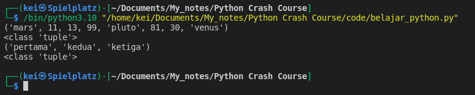
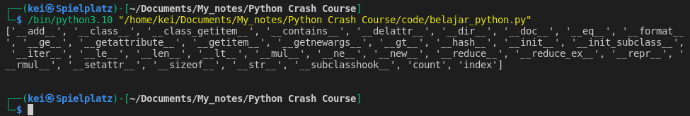
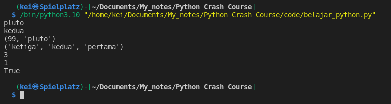
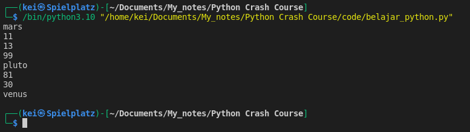
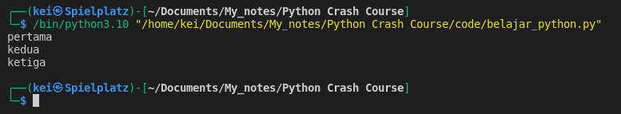

-
Tuples using parentheses ( )
-
Example of Tuples
mixed_tuple = ("mars", 11, 13, 99, "pluto", 81, 30, "venus")
tup_str = ("pertama", "kedua", "ketiga")
print(mixed_tuple)
print(type(mixed_tuple))
print(tup_str)
print(type(tup_str))

- To list all the built-in methods and functions available for Tuple, I can use dir()
mixed_tuple = ("mars", 11, 13, 99, "pluto", 81, 30, "venus")
print(dir(mixed_tuple))

- Tuple works similar like List, except that Tuple is immutable.
- Some of the operations that I can perform on a List I can also do on a Tuple
mixed_tuple = ("mars", 11, 13, 99, "pluto", 81, 30, "venus")
tup_str = ("pertama", "kedua", "ketiga")
# indexing
print(mixed_tuple[4])
print(tup_str[-2])
# slicing
print(mixed_tuple[3:5])
print(tup_str[::-1])
# find the length
print(len(tup_str))
# count the number of occurences
print(mixed_tuple.count(81))
# find a value in tuple
print("venus" in mixed_tuple)

- To iterate through a Tuple I can use For loop
mixed_tuple = ("mars", 11, 13, 99, "pluto", 81, 30, "venus")
for item in mixed_tuple:
print(item)

-
One of a useful case of Tuple’s immutability is if I want to pass a value that I don’t want to be changed I can use Tuple for that
-
Example of Tuple unpacking
tup_str = ("pertama", "kedua", "ketiga")
first, second, third = tup_str
print(first)
print(second)
print(third)
